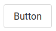
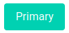
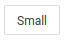
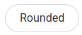
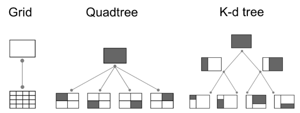
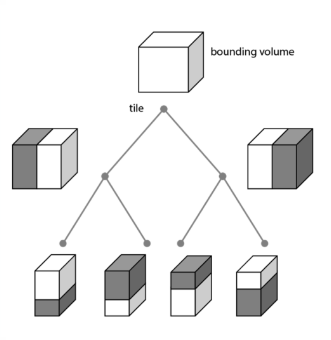

class: center, middle # Vuejs External librairies --- class: center, middle ## Router with vue-router .breadcrumbs[<a href="#1">Vuejs External librairies</a>] --- ## Why using a router? .breadcrumbs[<a href="#1">Vuejs External librairies</a>] Recall, Vuejs is a **Single Page Application** framework. This means that it should never have to reload the page. How do you navigate between pages in a Vuejs application, then? This is where the router comes in. <sup>[**Link to the documentation**][vue-doc-router]</sup> --- ### What is a router .breadcrumbs[<a href="#1">Vuejs External librairies</a> > <a href="#3">Why using a router?</a>] A router **simulates** multiple pages in a single page application. - You define a mapping between URLs and components. - You specify *where* the current component should be displayed. - It provides "fake links" components. - When clicked, these components change the URL and load the associated component. --- #### Defining routes .breadcrumbs[<a href="#1">Vuejs External librairies</a> > <a href="#3">Why using a router?</a> > <a href="#4">What is a router</a>] When initializing the app (i.e. in `main.js`), you define the routes that your app will use. ```javascript const routes = [ {path: '/home', component: Home}, {path: '/about', component: About}, {path: '/contact', component: Contact}, // ... ] ``` Each route associates a URL path with a component. You can then create a router instance with those routes, and ask the app to use it. ```javascript *const router = createRouter({ * history: createWebHistory(), * routes *}) const app = createApp(App) *app.use(router) app.mount('#app') ``` --- #### Specifying the route viewer .breadcrumbs[<a href="#1">Vuejs External librairies</a> > <a href="#3">Why using a router?</a> > <a href="#4">What is a router</a>] Vue-router needs to know where to display the currently active component. ```vue <template> <h1>Hello App!</h1> <main> `<RouterView />` </main> </template> ``` Vue-router will replace `<RouterView/>` with the component associated with the current route. --- #### Navigating between routes .breadcrumbs[<a href="#1">Vuejs External librairies</a> > <a href="#3">Why using a router?</a> > <a href="#4">What is a router</a>] Vue-router provides a `<RouterLink>` component that implements a link to a route. ```vue <template> <nav> <ul> <li>`<RouterLink to="/home">Home</RouterLink>`</li> <li>`<RouterLink to="/about">About</RouterLink`></li> <li>`<RouterLink to="/contact">Contact</RouterLink`></li> </ul> </nav> </template> ``` Clicking on any of these links will change the URL and load the associated component in the `<RouterView>`. --- #### Programmatic navigation .breadcrumbs[<a href="#1">Vuejs External librairies</a> > <a href="#3">Why using a router?</a> > <a href="#4">What is a router</a>] You can also navigate to a route programmatically. ```js export default { // ... methods: { goToHome() { * this.$router.push('/home') }, makeSearch() { * this.$router.push({name: 'search', params: {query: this.query}}) }, goBack() { * this.$router.go(-1) } } } ``` --- class: center, middle ### More about vue-router .breadcrumbs[<a href="#1">Vuejs External librairies</a> > <a href="#3">Why using a router?</a>] Read the [**official documentation**][vue-doc-router] for more information. Checkout an [**example from scratch**][router-install] [**Further reading**][router-singlepage] --- class: center, middle ## REST API Consumption with Axios .breadcrumbs[<a href="#1">Vuejs External librairies</a>] --- ## Why using Axios? .breadcrumbs[<a href="#1">Vuejs External librairies</a>] Axios is a library that simplifies promise-based HTTP requests on the browser. It supports all kinds of requests including GET, POST, PUT & DELETE. It is used to communicate between the front-end and the back-end and/or web services. <sup>[**Link to the documentation**][axios-doc]</sup> Of course, you may also use the native `fetch` API. --- ### Using Axios .breadcrumbs[<a href="#1">Vuejs External librairies</a> > <a href="#11">Why using Axios?</a>] Install **axios** via command line at the root of your project: `npm install axios` Import it directly within your vue components: ````javascript import axios from 'axios' ```` --- ### GET requests .breadcrumbs[<a href="#1">Vuejs External librairies</a> > <a href="#11">Why using Axios?</a>] Axios offers a `get` method for making GET requests, which returns a promise that resolves to the response data. ```javascript axios.get('BaseURL') .then(function (response) { // handle success console.log(response); }) .catch(function (error) { // handle error console.log(error); }); ``` It can take a second argument for additionnal request configuration, like query parameters, HTTP headers, etc. ```javascript axios.get('BaseURL', { params: { ID: 12345 }, headers: { 'Content-Type': 'application/json' } }) ``` --- ### POST requests .breadcrumbs[<a href="#1">Vuejs External librairies</a> > <a href="#11">Why using Axios?</a>] The `post` method takes a second argument for the body of the POST request. ```js axios.post('BaseURL', yourdata) .then(function (response) { // handle success console.log(response); }) .catch(function (error) { // handle error console.log(error); }); ``` It also takes an additional parameter for configuration like headers, etc. --- class: center, middle ### Further reading .breadcrumbs[<a href="#1">Vuejs External librairies</a> > <a href="#11">Why using Axios?</a>] Check out the [**full documentation**][axios-doc] for more details. [**Further reading**][axios-staydry] --- class: center, middle ## Create interactive maps with Leaflet .breadcrumbs[<a href="#1">Vuejs External librairies</a>] --- ### 1 - Leaflet installation .breadcrumbs[<a href="#1">Vuejs External librairies</a> > <a href="#16">Create interactive maps with Leaflet </a>] Install **leaflet** via command line at the root of your project: ` npm install leaflet ` <br> [**Quick start**][leaflet-quickstart] --- ### 2 - Leaflet importation/use .breadcrumbs[<a href="#1">Vuejs External librairies</a> > <a href="#16">Create interactive maps with Leaflet </a>] Add leaflet directly within your vue components: ````javascript // Make sure to import Leaflet's CSS before leaflet ! import "leaflet/dist/leaflet.css"; // <--- use leaflet stylesheet import L from 'leaflet'; // <--- access leaflet's methods // initialize map & tilelayer ```` <sup>[**Link to the documentation**][leaflet-doc]</sup> <br> **Do not forget:** - _Create an HTML container for your map_ - _Define a CSS height for your map container_ - _Add your leaflet map to a Vuejs data_ - _Initialize your leaflet map once your component is mounted_ --- class: center, middle ## Create dynamic maps with Openlayers .breadcrumbs[<a href="#1">Vuejs External librairies</a>] --- ### 1 - Openlayers installation .breadcrumbs[<a href="#1">Vuejs External librairies</a> > <a href="#19">Create dynamic maps with Openlayers </a>] Install **openlayers** via command line at the root of your project: ` npm install ol ` <br> [**Quick start**][openlayers-quickstart] --- ### 3 - Openlayers importation/use .breadcrumbs[<a href="#1">Vuejs External librairies</a> > <a href="#19">Create dynamic maps with Openlayers </a>] Add openlayers directly within your vue components: ````javascript import 'ol/ol.css'; // <--- use ol stylesheet import Map from 'ol/Map'; // <--- access Map ol's methods import View from 'ol/View'; // <--- access View ol's methods // <--- import what you need // initialize map & tilelayer & view ```` <sup>[**Link to the documentation**][openlayers-doc]</sup> <br> **Do not forget:** - _Import the methods that you need_ - _Create an HTML container for your map_ - _Define a CSS height for your map container_ - _Add your ol map to a Vuejs data_ - _Initialize your ol map once your component is mounted_ --- class: center, middle ## Build web interfaces with Bulma .breadcrumbs[<a href="#1">Vuejs External librairies</a>] --- ## Why using Bulma? .breadcrumbs[<a href="#1">Vuejs External librairies</a>] Bulma is a CSS framework that helps you to **easily** build web interfaces that are **responsive, modular, customizable**. <sup>[**Link to the documentation**][bulma-doc]</sup> --- ### 1 - Bulma installation .breadcrumbs[<a href="#1">Vuejs External librairies</a> > <a href="#23">Why using Bulma?</a>] Install **Bulma** via command line at the root of your project: ` npm install bulma ` --- ### 3 - Bulma importation .breadcrumbs[<a href="#1">Vuejs External librairies</a> > <a href="#23">Why using Bulma?</a>] Add bulma directly in your **main.js**, before creating your App: ````javascript // src/main.js import 'bulma/css/bulma.css'; ```` --- ### 3 - Start customizing your app ! .breadcrumbs[<a href="#1">Vuejs External librairies</a> > <a href="#23">Why using Bulma?</a>] .grid-80[ - Create a button: ```html <button class="button">Button</button> ``` - Change **color** : ```html <button class="button is-primary">Primary</button> ``` - Change **size**: ```html <button class="button is-small">Small</button> ``` - Change **style** : ```html <button class="button is-rounded">Rounded</button> ``` ] .grid-20[ <br> <br>  <br> <br> <br>  <br> <br> <br>  <br> <br> <br>  ] --- class: center, middle ## 3D globe with Cesium .breadcrumbs[<a href="#1">Vuejs External librairies</a>] --- ## What is CesiumJS? .breadcrumbs[<a href="#1">Vuejs External librairies</a>] CesiumJS is an open source JavaScript library for creating world-class 3D globes and maps. Cesium's robust and performant pipelines tile a diverse data formats. These formats are defined in five types of assets: - <ins>3D Tiles</ins>: An open specification for streaming massive heterogeneous 3D geospatial datasets. - <ins>Imagery</ins>: TMS (Tile Map Service) and WMTS (Web Map Tile Service) layers created from raster imagery. - <ins>Terrain</ins>: A quantized-mesh tileset created from raster terrain. - <ins>glTF</ins>: A binary glTF model. - <ins>Native</ins> (i.e. GeoJSON): The data is not processed by the tiling pipeline and is hosted in the same format it was uploaded as. <sup>[**Source**][cesium-intro-source]</sup> <sup>[**Link to the documentation**][cesium-doc]</sup> --- ### 1 - Cesium installation .breadcrumbs[<a href="#1">Vuejs External librairies</a> > <a href="#28">What is CesiumJS?</a>] Install **Cesium** via command line at the root of your project: `npm install cesium` --- ### 2 - Cesium configuration .breadcrumbs[<a href="#1">Vuejs External librairies</a> > <a href="#28">What is CesiumJS?</a>] CesiumJS requires a few static files to be hosted on your server. Therefore, we need to inform [webpack][webpack] (module bundler) to use these files. We should configure webpack to copy the following four directories and serve them as static files: - `node_modules/cesium/Build/Cesium/Workers` - `node_modules/cesium/Build/Cesium/ThirdParty` - `node_modules/cesium/Build/Cesium/Assets` - `node_modules/cesium/Build/Cesium/Widgets` Then, `CESIUM_BASE_URL` must be set where CesiumJS and these four directories are served. <sup>[**Source**][cesium-config-source]</sup> Add configuration file within your **src/** directory: `vue.config.js` <sup>[**( Check file )**][gist-vueconfig]</sup> --- ### 3 - Get/Import a Cesium ion token .breadcrumbs[<a href="#1">Vuejs External librairies</a> > <a href="#28">What is CesiumJS?</a>] - Create an account on Cesium - Go to your access token tab - Copy your token - Add your token to your app ```js Cesium.Ion.defaultAccessToken = YOUR_CESIUM_TOKEN ``` - **You are ready to set up your globe !** --- ### 3 - Create a 3D globe .breadcrumbs[<a href="#1">Vuejs External librairies</a> > <a href="#28">What is CesiumJS?</a>] It's very simple, it works like Leaflet or Openlayers. ```javascript import "cesium/Build/Cesium/Widgets/widgets.css"; // <--- use Cesium stylesheet import * as Cesium from 'cesium'; // <--- access Cesium's methods // initialize Viewer let viewer = new Cesium.Viewer('your-cesium-div', { // <--- Create viewer in a specific div terrainProvider: new Cesium.createWorldTerrain() // <--- Add DEM }); ``` <br> **Do not forget:** - _Create an HTML container for your globe_ - _Define a CSS height for your map container_ - _Add your Cesium globe to a Vuejs data_ - _Initialize your Cesium globe once your component is mounted_ --- class: center, middle ## Play around with cesium's assets .breadcrumbs[<a href="#1">Vuejs External librairies</a>] --- ### 3D Camera .breadcrumbs[<a href="#1">Vuejs External librairies</a> > <a href="#33">Play around with cesium's assets</a>] The camera is defined by a position, orientation, and view frustum. ```js // 4. Fly to a position with an orientation using heading, pitch and roll. viewer.camera.flyTo({ destination : Cesium.Cartesian3.fromDegrees(`LONGITUDE`, `LATITUDE`, `ALTITUDE`), orientation : { heading : Cesium.Math.toRadians(`ANGLE_YAW`), pitch : Cesium.Math.toRadians(`ANGLE_PITCH`), roll : 0.0 } }); ``` <sup>[**Source**][cesium-doc-camera]</sup> .grid-40[ <img src='https://www.researchgate.net/profile/George_Chen41/publication/224198558/figure/fig8/AS:683198057029635@1539898518596/Camera-pose-The-position-vector-is-the-cameras-world-coordinates-The-orientation_W640.jpg'/> <sup><sup>[**Source**][pic-camera-pos-ori]</sup></sup> ] .grid-30[ > ] .grid-30[ <img src='https://lh3.googleusercontent.com/tW2XCs_G5NV1Lpt393KILQSh7tFbcvo4zMrwEabJU1vO8t0nDrYtQXNE4eGVdOJJuuNKXRRqX1UjUN4fK5tMXo6XKw9DkA6N1IGJx17v8lxCQVxmc5VmBAd8cUOo4X7SYw'/> <sup><sup>[**Source**][pic-camera-angles]</sup></sup> ] --- ### 3D Tiles .breadcrumbs[<a href="#1">Vuejs External librairies</a> > <a href="#33">Play around with cesium's assets</a>] 3D Tiles define a spatial data structure and a set of tile formats designed for 3D and optimized for streaming and rendering. 3D Tile aims at minimizing client-side processing. <sup>[**Source**][cesium-3dtiles]</sup> <br><br> .grid-60[ In 2D:  <br><br> [**Further reading (images' source)**][cesium-3dtile-doc] ] .grid-10[ > ] .grid-30[ In 3D:  ] --- ### 3D Tiles .breadcrumbs[<a href="#1">Vuejs External librairies</a> > <a href="#33">Play around with cesium's assets</a>] <p align="center"> <img src='https://cesium.com/blog/images/2018/10-09/3dtiling.png' class='w60' /> </p> <sup>[**Source**][pic-ion-tile]</sup> ```javascript let tileddata = new Cesium.Cesium3DTileset({ url : '/path/to/3d/tileset' }); viewer.scene.primitives.add(tileddata); ``` Swisstopo provides 3D Tiles for its 3D buildings ! `https://vectortiles0.geo.admin.ch/3d-tiles/ch.swisstopo.swisstlm3d.3d/20201020/tileset.json` <sup>[**Swisstopo documentation**][swisstopo-buildings]</sup> --- ### Imagery: TMS (Tile Map Service) & WMTS (Web Map Tile Service) .breadcrumbs[<a href="#1">Vuejs External librairies</a> > <a href="#33">Play around with cesium's assets</a>] Basemap of your 3D globe. ```javascript viewer.scene.imageryLayers.removeAll(); let basemap = new Cesium.UrlTemplateImageryProvider({ url : '/path/to/wmts/imagery' }); viewer.scene.imageryLayers.addImageryProvider(basemap); ``` It works with Swisstopo WMTS too ! `https://wmts.geo.admin.ch/1.0.0/ch.swisstopo.pixelkarte-farbe/default/current/3857/{z}/{x}/{y}.jpeg` <sup>[**Swisstopo documentation**][swisstopo-imagery]</sup> --- ### Terrain: Quantized Mesh .breadcrumbs[<a href="#1">Vuejs External librairies</a> > <a href="#33">Play around with cesium's assets</a>] DEM used by your globe. A quantized mesh (reindexed mesh) is used to improve rendering performance. <p align="center"> <img src='https://cesium.com/blog/images/2015/12-18/terrain-obb-wireframe.png' class='w40' /> </p> <sup>[**Source**][cesium-quantatization] / [**Further reading**][cesium-qmesh]</sup> ```javascript let terrain = new Cesium.CesiumTerrainProvider({ url : '/path/to/terrain/mesh' }); viewer.terrainProvider = terrain; ``` And it works with Swisstopo terrain tiles too ! `//3d.geo.admin.ch/1.0.0/ch.swisstopo.terrain.3d/default/20200520/4326/` <sup>[**Swisstopo documentation**][swisstopo-imagery]</sup> --- ### glTF (GL Transmission Format) .breadcrumbs[<a href="#1">Vuejs External librairies</a> > <a href="#33">Play around with cesium's assets</a>] Format to describe 3D models (geometry, textures, lights). It's considered as the "JPEG of 3D". There is two possible file extensions, .gltf (JSON/ASCII) or .glb (binary). <sup>[**Source**][gltf-wiki] / [**Further reading**][cesium-gltf]</sup> ```js // Create an hanchor point to import the gtlf model let modelMatrix = Cesium.Transforms.eastNorthUpToFixedFrame( Cesium.Cartesian3.fromDegrees(`LONGITUDE`, `LATITUDE`, `ALTITUDE`)); let mygltfmodel = Cesium.Model.fromGltf({ url : `YOUR_GLTF_MODEL_PATH`, modelMatrix : modelMatrix, scale : `SCALE` })); scene.primitives.add(mygltfmodel) ``` --- class: center, middle ## Project's seed .breadcrumbs[<a href="#1">Vuejs External librairies</a>] [**Let's wrap up !**][seed] --- ### Sandcastle examples linked to your projects .breadcrumbs[<a href="#1">Vuejs External librairies</a> > <a href="#40">Project's seed</a>] - Cameras: [demo][demo-camera] - Gltf objects import: [demo][demo-gltf] - Geojson import: [demo][demo-geojson] - Bar visualization from geojson: [demo][demo-bar] - Clamp to ground: [demo][demo-clampground] [vue-doc-router]:https://router.vuejs.org/guide/ [router-example]:https://learnvue.co/2020/04/a-first-look-at-vue-router-in-vue3/ [router-singlepage]:https://medium.com/js-dojo/how-to-build-an-spa-using-vue-js-vuex-vuetify-and-firebase-using-vue-router-fc5bd065fe18 [router-install]:https://www.vuemastery.com/blog/vue-router-a-tutorial-for-vue-3/ [axios-doc]:https://github.com/axios/axios [axios-staydry]:https://css-tricks.com/stay-dry-using-axios-for-api-requests [leaflet-doc]:https://leafletjs.com/reference-1.7.1.html [leaflet-quickstart]:https://leafletjs.com/examples/quick-start/ [openlayers-doc]:https://openlayers.org/en/latest/apidoc/ [openlayers-quickstart]:https://openlayers.org/en/latest/doc/quickstart.html [bulma-doc]:https://bulma.io/documentation/ [cesium-intro-source]:https://observablehq.com/@cintymd/cesiumjs-introduction [cesium-doc]:http://gitpc.com.cn/Build/Documentation/index.html [cesium-config-source]:https://cesium.com/docs/tutorials/quick-start/ [cesium-3dtiles]:https://cesium.com/blog/2015/08/10/introducing-3d-tiles/ [cesium-3dtile-doc]:https://docs.opengeospatial.org/cs/18-053r2/18-053r2.html [cesium-qmesh]:https://github.com/CesiumGS/quantized-mesh [cesium-quantatization]:https://cesium.com/blog/2015/12/18/terrain-quantization/ [cesium-gltf]:https://www.khronos.org/gltf/ [cesium-doc-camera]:https://cesium.com/docs/cesiumjs-ref-doc/Camera.html?classFilter=camera [gltf-wiki]:https://en.wikipedia.org/wiki/GlTF [webpack]:https://webpack.js.org/ [swisstopo-buildings]:https://api3.geo.admin.ch/services/sdiservices.html#d-tiles [swisstopo-imagery]:https://api3.geo.admin.ch/services/sdiservices.html#wmts [pic-camera-angles]:https://sites.google.com/site/projectsmartgimbal/home/TechnicalDetail [pic-camera-pos-ori]:http://dx.doi.org/10.1109/IPIN.2010.5646820 [pic-ion-tile]:https://cesium.com/blog/2018/10/09/ion-3d-tiles-pipeline/ [seed]:https://github.com/Tazaf/mdt-gio1-vue-seed [demo-camera]:https://sandcastle.cesium.com/?src=Camera.html [demo-gltf]:https://sandcastle.cesium.com/?src=3D%20Models.html [demo-geojson]:https://sandcastle.cesium.com/?src=GeoJSON%20and%20TopoJSON.html [demo-bar]:https://sandcastle.cesium.com/?src=Custom%20DataSource.html [demo-clampground]:https://sandcastle.cesium.com/?src=Clamp%20to%20Terrain.html [gist-vueconfig]:https://gist.github.com/thibaud-c/71f6dee3ce69487be5403c619a5914a4